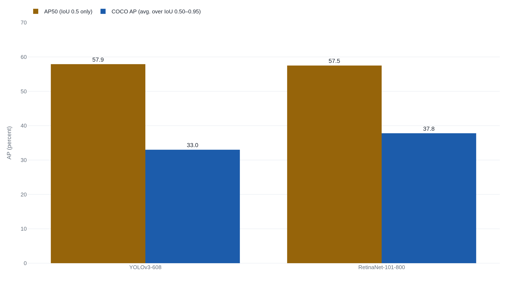

YOLOv3 tied RetinaNet on one mAP and trailed it by 4.8 points on another
COCO's headline detection score averages the overlap test across ten thresholds where PASCAL VOC used a single one, which is why the same two detectors, YOLOv3 and RetinaNet, tied under one and split by 4.8 points under the other.
Why this matters
Every object-detection leaderboard, the systems that spot pedestrians for a self-driving car, tumors on a scan, defects on a factory line, reports one of two letters: AP, or its cousin mAP. This lesson builds that number up from the ground: a detector's output, and the overlap test that decides whether a predicted box counts as a hit. It shows how one class's ranked hits and misses collapse into a single Average Precision. Then it does something the number itself will not do for you. "mAP" has named at least three different computations since PASCAL VOC first defined it. COCO's version is not VOC's version. Two real detectors, compared by their own authors, ranked in opposite order depending on which one got reported. By the end you will know what a reported mAP licenses, and what it does not.
- 01
- The F1 score: precision and recall built from a table of four counts, and the harmonic mean that ties them together.
- 02
- AUROC: a single-number score that never fixes the threshold a classifier will run at.
A detected box has to earn its match
An object detector's output is a list of boxes drawn on an image, each with a class label, "dog," "stop sign," and a confidence score attached. Grading that output means asking two questions: did the detector draw a box in roughly the right place, and did it put the right label on it? The first question needs its own test, because "roughly the right place" has to mean something specific and repeatable.
The test is called Intersection over Union, or IoU. Draw the ground-truth box, the one a human labeler drew around the real object, and the detector's predicted box on the same image. IoU is the area where the two boxes overlap, divided by the area they cover between them: \mathrm{IoU} = \dfrac{\text{area of overlap}}{\text{area of union}}.1 Say the ground-truth box covers 100 square units of the image and the predicted box covers 100 as well, but the two only overlap on 70 of those units. Their union covers 100 + 100 − 70 = 130 units, so IoU = 70/130, about 0.54.
The PASCAL VOC challenge, which set most of these conventions in the 2000s, drew the line for a hit at an IoU above 0.5. That bar was set deliberately loose: even two people drawing a box around the same object rarely agree on its exact edges, and the organizers built room for that disagreement into the test.1 Loosen the bar further and a detector's measured score climbs even though its boxes have not gotten any tighter. On the class where 2007's submitted detectors did best, cars, dropping the overlap requirement from 50 percent to 10 percent raised the measured score by about 7.5 points, on the exact same predicted boxes.1
Turning a ranked list into one number
The f1-score lesson already built precision and recall from a table of four counts. Average Precision, or AP, asks how those two numbers trade off as a detector gets pickier about what it is willing to call a positive.
Take every detection a model produced for one class and rank them by confidence, most sure to least sure. Walk down the list, checking each against the IoU test and an unclaimed ground-truth box, marking it a hit or a miss, and keep a running precision and recall as you go.
| Rank | Result | Precision | Recall |
|---|---|---|---|
| 1 | Hit | 1.00 | 0.25 |
| 2 | Hit | 1.00 | 0.50 |
| 3 | Miss | 0.67 | 0.50 |
| 4 | Hit | 0.75 | 0.75 |
| 5 | Miss | 0.60 | 0.75 |
| 6 | Miss | 0.50 | 0.75 |
Plot each row's precision against its recall and the points trace the precision-recall curve, zigzagging down as confidence drops. Average Precision is the area under that curve, one number standing in for the whole shape of it. The current definition takes that area in two steps. First, at every recall level, replace the precision with the highest precision achieved at that recall or higher, which turns the zigzag into a staircase. Then measure the staircase's area exactly, since it is built from flat steps.2 Run that on the table above and the area comes out to about 0.69, one class's AP.
COCO redefined what the average covers
When the COCO dataset was published in 2014, its own paper did not yet define the score it would be judged on. Its authors wrote that "a full discussion of evaluation metrics will be added once the evaluation server is complete."3
When the evaluation server did ship, it changed two things at once. The first is the easy one: "mean" now runs across every category in the dataset. COCO's documentation treats the words interchangeably: "AP is averaged over all categories. Traditionally, this is called 'mean average precision' (mAP). We make no distinction between AP and mAP."4 VOC's mAP already worked that way. The second change did not. VOC scored a hit at a single IoU of 0.5. COCO's documentation labels that single-threshold score "the PASCAL VOC metric" and lists it apart from its actual headline number, which averages precision across ten overlap thresholds, 0.50 to 0.95. It calls this "a break from tradition," because "averaging over IoUs rewards detectors with better localization."4 The reference code that computes every official COCO score confirms it: ten thresholds, 0.50 to 0.95, averaged with a plain mean.5
The threshold was not the only thing that moved. VOC itself changed how it draws the area under the curve, partway through its own run. Through 2009 it took the curve's height at eleven evenly spaced recall levels and averaged those eleven numbers. From 2010 it switched to the every-point method built above, because the coarser eleven-point version, in the organizers' own later words, "was too crude to discriminate between the methods at low AP."6 The two methods do not agree even when everything else about the detections is held fixed. On one worked example built to isolate just that choice, eleven-point interpolation gives an AP of 88.64 percent and all-point interpolation gives 89.58 percent, on identical detections at the identical overlap threshold.7
So a single "mAP" figure, quoted without its source, could be VOC's original eleven-point average at one overlap threshold, VOC's later all-point average at that same threshold, or COCO's all-point average spread across ten thresholds and every category. Those are at least three different computations, and none of them converts into another by a fixed formula.
Same detectors, opposite rankings
In 2018 Joseph Redmon and Ali Farhadi published YOLOv3 alongside a comparison to RetinaNet. Reported under what they called "the old .5 IOU mAP detection metric," AP50, YOLOv3-608 scored 57.9 and RetinaNet-101-800 scored 57.5. The paper called that "similar performance," and noted that YOLOv3 ran 3.8 times faster, 51 milliseconds against 198.8
Report the same two detectors on COCO's own headline number instead, averaged over the ten overlap thresholds, and the near-tie disappears. YOLOv3-608 scores 33.0. RetinaNet-101-800 scores 37.8, a 4.8-point gap in RetinaNet's favor.8

The paper explains why, in a section titled "What This All Means": "It's not as great on the COCO average AP between .5 and .95 IOU metric. But it's very good on the old detection metric of .5 IOU."8 Earlier, the paper gives the reason: YOLOv3's "performance drops significantly as the IOU threshold increases," meaning its boxes are close enough to count at a loose 0.5 overlap but not tight enough to hold up as the bar rises toward 0.95.8
No independent reviewer is on record saying either number fooled them. What happened here needed no outside victim: two detectors, evaluated under a name that names two different procedures, produced two verdicts about which one localizes better, in the same paper. Hand a reader the AP50 line from one and the COCO AP line from another, with nothing telling them the two scores differ, and they would draw the wrong conclusion about which detector to trust.
A single mAP number also hides how it was earned. A model can nail nine classes out of ten and miss the tenth almost every time, and still post a high mAP, because that one bad class is one line in a long average. It can look best at a confidence cutoff no deployment would ever run at, because the precision-recall curve sweeps every cutoff at once. It can hand back the same score for well-calibrated confidence numbers and nonsense ones alike, because, as YOLOv3's authors worked out in their own rebuttal to a reviewer, AP reads only the order a detector ranks its own detections, never the confidence values themselves.8
mAP is a proxy for a question it never actually asks. You want to know whether a detector will catch the one rare, safety-relevant object it cannot afford to miss; mAP reports how it ranked every class, common and rare, folded into one average. You want to know whether it works at the confidence threshold your system runs at; mAP averages over every threshold from the most cautious to the most reckless. You want to know whether its boxes are tight enough for the job; mAP folds that into ten overlap thresholds and hands back one number for all of them.
None of that makes a higher mAP meaningless. In 2023, researchers tested sixteen 3D object detectors in a self-driving stack in the CARLA simulator, to see whether the score predicted how well the cars actually drove. It did. mAP correlated with the simulator's driving-quality score at r = 0.80 and with how often the cars collided at r = 0.90. A metric built specifically for driving did only slightly better, at r = 0.85 and r = 0.90.9 That study measured a different task, 3D boxes from lidar and cameras judged by a simulated drive, not the 2D image boxes VOC and COCO score. Correlating with an average outcome is not the same claim as never being fooled about one model. It is still real evidence that a detection mAP can track what a deployment cares about. The YOLOv3 case does not show that mAP lies. It shows something narrower: the same three letters can point at two different procedures, and a detector that wins by one can lose by the other without either number being wrong.
The takeaway
A reported mAP is the end of a chain. A box counts as a hit only past an overlap threshold. One class's ranked hits and misses become a precision-recall curve, and that curve becomes one Average Precision. Every class's AP gets averaged into the mAP a leaderboard prints. Every link in that chain is a choice, and the choices have changed. PASCAL VOC scored a hit at a single 0.5 overlap and averaged eleven points of the curve, then switched to averaging every point on it. COCO kept that overlap floor but added nine harder ones on top, averaging across all ten. Report YOLOv3 and RetinaNet under the old single-threshold score and they tie. Report them under COCO's ten-threshold score and RetinaNet leads by 4.8 points, exactly as its own authors documented. A reported mAP does not tell you a detector is good. It tells you how it ranked, under one specific, namable set of choices, worth only as much as knowing which choices they were.
- 01
- COCO Detection Evaluation: the full page defining all twelve COCO detection metrics, not just the two this lesson compared.
- 02
- Padilla et al., detection-metrics toolkit: computes AP by every interpolation method this lesson named, side by side, on the same detections.
Sources
- IJCV · Everingham, Van Gool, Williams, Winn & Zisserman, The PASCAL Visual Object Classes (VOC) Challenge (2010)
- Everingham & Winn · The PASCAL Visual Object Classes Challenge 2012 (VOC2012) Development Kit (2012)
- arXiv · Lin et al., Microsoft COCO: Common Objects in Context (2014/2015)
- COCO Consortium · Detection Evaluation documentation
- GitHub · cocodataset/cocoapi, pycocotools/cocoeval.py (reference implementation)
- IJCV · Everingham, Eslami, Van Gool, Williams, Winn & Zisserman, The PASCAL Visual Object Classes Challenge: A Retrospective (2015)
- GitHub · Padilla et al., A Comparative Analysis of Object Detection Metrics, companion toolkit
- arXiv · Redmon & Farhadi, YOLOv3: An Incremental Improvement (2018)
- CVF Open Access · Schreier, Renz, Geiger & Chitta, On Offline Evaluation of 3D Object Detection for Autonomous Driving (ICCV 2023 Workshop)